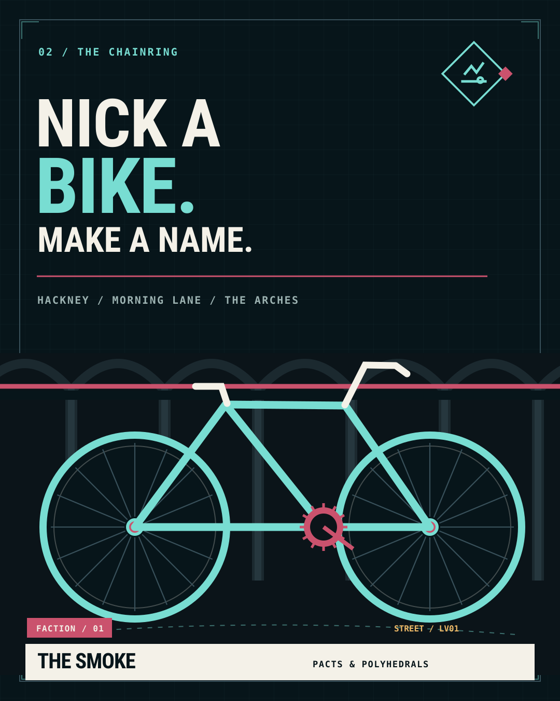

JOB CH1The beginning
On Your Bike
Rent is due Friday. Auntie Pat needs two bikes by tonight. Time to earn your first sixty quid.
FROM: The Chainring

The Smoke is currently in beta testing. Rules, missions and Foundry tools are still being refined.
The next message always sounds simple. This is a spoiler-safe taste of the campaign: the starting jobs and the first doors into the twelve faction careers. The mission content is currently in beta testing.
Not all the work is criminal. Shift work, favours, recoveries, neighbourhood cases and investigations can all change your standing.
Start in Hackney, meet your crew and learn what a little favour can turn into.
Beyond the three opening faction stages, careers branch across eleven more organisations and The Chainring.
A story to find in every one of the twenty mapped street districts.
125 distinct missions in the full campaign: 12 opening jobs, 93 additional faction commissions, and 20 local cases. This public page shows only selected entry points.

The first small job is never just a small job. Auntie Pat knows where the bikes go, who needs paying, and who will be asking questions when yours goes missing.
Choose your approach, find your crew and start in Hackney. The public briefings below leave the surprises to the table.
SEE THE OPENING JOBSExplore the first leads. The full mission objectives, people, maps and hidden turns live with the GM.
Rent is due Friday. Auntie Pat needs two bikes by tonight. Time to earn your first sixty quid.
A prized road bike is waiting somewhere on the manor. Pat knows a buyer.
Someone has made off with Pat's van. Get it back before the trail goes cold.
Pat has a fresh opportunity at the workshop. The story attached is less straightforward.

A sound system has gone missing before an important listening night. Find the gear and get it to the venue.

A debt is coming due. The Lea Boys want someone who can ask the right questions.

The club scene always needs a favour, a runner or a fixer. The door is open if you dare.

A delivery with too many interested parties. Getting it there is only half the job.

A valuable object has a disputed past. Everyone has a version of the truth.

The books balance until they don't. Someone needs to settle an awkward account.

The traders have a problem with a consignment and a question of ownership.

Neighbours need practical help before they need promises. Show up when it matters.

A detective has a lead that needs discretion. Choose what you tell her.

A redevelopment offer looks generous. Find out what sits behind the paperwork.

An old clue refuses to stay buried. Follow the trail, if you can trust it.
No matching briefings. Try another faction or search term.
A fee, a deadline and a name on the other end of the Blower.
Get the van, find the entrance, talk your way in or bring the right tools.
Pick up what you need, carry it, deliver it, and deal with the Heat, the witnesses or the people you disappoint.
The Foundry development build implements physical mission property for 111 jobs. Narrative conversations, contested outcomes and some handovers still need player or GM judgement.
Get the rules. Find your crew. Start with one little job and see how far the city lets you go.